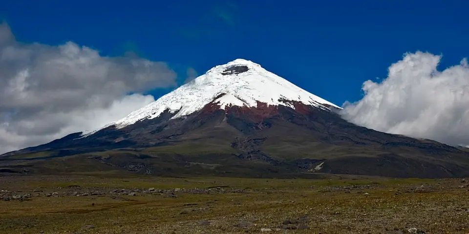

South America
Ecuador on a budget
Volcanoes, cloud forest, Andean markets and the Amazon in a country you can cross in a day, with cheap buses and set lunches everywhere.
Photo: Gerard Prins, CC BY-SA 3.0, via Wikimedia Commons

Classic route
Quito, Mindo, the Quilotoa Loop, Baños, then Cuenca. 2 to 3 weeks.
Before you go
Flights to Quito: Skyscanner · Kiwi.com · Google Flights
Hostels and guesthouses in Quito · Galápagos · Baños · Cuenca
Tours and tickets: Quito · Galápagos
Mobile data: Ecuador eSIM
Travel insurance: SafetyWing
How much 19 places in Ecuador cost
Daily budgets per person in US dollars: a hostel dorm or simple guesthouse, local food, local transport and the usual entry fees.
-
Quito
Wander a UNESCO-listed colonial center, ride the TelefériQo up Pichincha volcano and straddle the equator line just outside town.
Bed $12 · Food $9 · Getting around $2 · Extras $5
Budget tip: City buses cost cents. Use taxis or ride apps at night rather than walking.
$28per day -
Galápagos
Sea lions napping on town benches, giant tortoises in the highlands and snorkeling beside sea turtles and reef sharks.
Bed $35 · Food $15 · Getting around $15 · Extras $40
Budget tip: The park entry fee is $200. Skip the cruises, base yourself on Santa Cruz and Isabela, and hop between islands on public ferries.
$105per day -
Baños
Chase waterfalls, ride the 'swing at the end of the world' and cycle down the Ruta de las Cascadas to the Pailón del Diablo.
Bed $11 · Food $9 · Getting around $3 · Extras $6
Budget tip: Rent a bike and take the bus back up. The thermal hot springs open at 5 a.m., before the crowds.
$29per day -
Cuenca
Blue-domed cathedrals, riverside walks and day hikes among the lakes of El Cajas national park.
Bed $12 · Food $8 · Getting around $2 · Extras $4
Budget tip: Market lunches are about $3. Cajas is free and a short bus ride from Cuenca.
$26per day -
Quilotoa Loop
A 3 or 4 day village-to-village hike through Andean farmland, ending at the rim of a turquoise crater lake.
Bed $15 · Food $7 · Getting around $4 · Extras $3
Budget tip: Hostels along the loop include dinner and breakfast. Leave big bags in Latacunga and hike light.
$29per day -
Otavalo
Browse the famous Saturday market, swim beneath the Peguche waterfall and hike the rim of the Laguna Cuicocha crater lake.
Bed $11 · Food $8 · Getting around $2 · Extras $3
Budget tip: The walk around the Cuicocha crater rim is free and takes about four hours. Otavalo is an easy day trip from Quito by bus.
$24per day -
Vilcabamba
A mild southern valley with ridge hikes up Mandango and trails into the cloud forest of Podocarpus National Park.
Bed $11 · Food $8 · Getting around $2 · Extras $3
Budget tip: Most trails need no guide. Many guesthouses have pools and still cost very little.
$24per day -
Cajas National Park
High páramo of over two hundred glacial lakes and twisted polylepis forests just outside Cuenca, crossed by well-marked day hikes.
Bed $12 · Food $8 · Getting around $2 · Extras $2
Budget tip: Catch a regular bus from Cuenca's terminal toward Guayaquil and ask to stop at Toreadora; register at the free entrance and bring rain gear.
$24per day -
Canoa
Small surf town on a long Pacific beach, with paragliding over the cliffs and cheap ceviche in a village rebuilt after the 2016 earthquake.
Bed $11 · Food $8 · Getting around $3 · Extras $4
Budget tip: Surf lessons and board rental are cheap; stay a short walk back from the beach front for lower room rates.
$26per day -
Guayaquil
Steamy port city with the Malecón 2000 riverfront, the iguana-filled Parque Seminario and the painted steps of Las Peñas hill.
Bed $13 · Food $9 · Getting around $2 · Extras $3
Budget tip: Flights to Galápagos are often cheaper from here than Quito; eat encebollado for breakfast at local stalls.
$27per day -
Ingapirca
Ecuador's largest Inca site, with an elliptical Temple of the Sun built over earlier Cañari ruins, set in rolling highland farmland.
Bed $11 · Food $8 · Getting around $3 · Extras $5
Budget tip: Take the direct public bus from Cuenca in the morning for a cheap day trip instead of a guided tour.
$27per day -
Montañita
A party-loving surf village on the Spondylus coast, with cheap cocktails, consistent waves and packed weekends.
Bed $12 · Food $9 · Getting around $3 · Extras $4
Budget tip: Surf lessons and board rentals are cheap. Come on weekdays, when it is quieter and hostel rooms cost less.
$28per day -
Mindo
Cloud forest full of hummingbirds and butterflies, with waterfall hikes and bean-to-bar chocolate farm tours.
Bed $12 · Food $9 · Getting around $3 · Extras $5
Budget tip: Many waterfall trails charge only a few dollars entry. Hostels often have hummingbird feeders in the garden.
$29per day -
Chimborazo
Volcano whose summit is the farthest point from Earth's centre, with vicuñas grazing below its glaciers on a walk between the high refuges.
Bed $13 · Food $9 · Getting around $4 · Extras $5
Budget tip: Base yourself in Riobamba and take a bus toward Guaranda to the park entrance, or share a day tour with other travellers.
$31per day -
Cotopaxi
A near-perfect snowy volcanic cone rising above high grassland, lagoons and herds of wild horses.
Bed $15 · Food $10 · Getting around $5 · Extras $5
Budget tip: Park entry is free, but climbing to the summit needs a guide. Hostels near the park include meals and transport.
$35per day -
Papallacta
Highland village famous for volcanic hot spring pools surrounded by cloud forest, close to the Cayambe-Coca reserve trails.
Bed $14 · Food $9 · Getting around $3 · Extras $10
Budget tip: Visit the public pools on weekdays when they are quiet, and hop on any bus from Quito heading for Baeza or Tena.
$36per day -
Tena
An Amazon gateway town for whitewater rafting on the Jatunyacu and stays with Kichwa communities in the rainforest.
Bed $11 · Food $8 · Getting around $3 · Extras $20
Budget tip: Rafting day trips are cheap here. Book community stays directly to cut out agents and keep money local.
$42per day -
Puerto López
Humpback whales breach offshore from June to September, blue-footed boobies nest on Isla de la Plata, and Los Frailes beach waits nearby.
Bed $12 · Food $9 · Getting around $3 · Extras $30
Budget tip: Isla de la Plata is a cheap taste of Galápagos wildlife. Los Frailes is free to visit.
$54per day -
Cuyabeno
Flooded Amazon reserve of blackwater lagoons where you canoe past pink river dolphins, anacondas, monkeys and hoatzin birds.
Bed $12 · Food $8 · Getting around $8 · Extras $40
Budget tip: Book a four-day lodge package in Quito or Lago Agrio to compare prices; it usually includes transport from Lago Agrio, meals and guides.
$68per day
Know before you go
Ecuador on a budget: the basics
Currency
Ecuador uses the US dollar
No exchange needed. Bring clean, untorn notes, since small shops often refuse damaged bills.
Getting around
Buses are cheap and frequent between Quito, Latacunga, Baños and Cuenca, and the Quilotoa Loop is easy to do by local bus plus hiking. Uber, DiDi and inDrive work in Quito, Guayaquil and Cuenca. Little needs booking ahead except Galápagos trips.
Where to sleep
Hostel dorms and family-run hostales are cheap everywhere on this route, and Quilotoa Loop villages like Isinliví and Chugchilán have hostels that include dinner and breakfast.
What to eat
- Locro de papa: creamy potato and cheese soup with avocado
- Encebollado: tuna and cassava soup with pickled onions, a coastal favorite
- Llapingacho: fried potato and cheese patties with egg and sausage
- Canelazo: hot cinnamon and fruit drink, often with a splash of liquor
Money
Ecuador uses the US dollar, so bring small bills since $50 and $100 notes are often refused. Restaurants may add a 10% service charge, and haggling is normal at the Otavalo market.
Phone data
Claro and Movistar SIMs are sold with a passport and work well in the highlands, though coverage drops on remote stretches of the Quilotoa Loop.
Heads up
On buses, keep your bag on your lap rather than under the seat or overhead, where thefts are common.
Ecuador travel: quick answers
How much does a day in Ecuador cost on a budget?
About $29 a day for one person, from $24 in Otavalo to $105 in Galápagos. That covers a hostel dorm or simple guesthouse, local food, local transport and the usual entry fees, so a week runs about $203 before flights.
When is the best time to visit Ecuador?
June to September and December to January is the best time, with the most reliable weather for getting around.
What is the cheapest place to visit in Ecuador?
Otavalo, at about $24 a day. Browse the famous Saturday market, swim beneath the Peguche waterfall and hike the rim of the Laguna Cuicocha crater lake.
How long do you need in Ecuador?
Quito, Mindo, the Quilotoa Loop, Baños, then Cuenca. 2 to 3 weeks.
How do you get around Ecuador cheaply?
Buses are cheap and frequent between Quito, Latacunga, Baños and Cuenca, and the Quilotoa Loop is easy to do by local bus plus hiking. Uber, DiDi and inDrive work in Quito, Guayaquil and Cuenca. Little needs booking ahead except Galápagos trips.
What food should you try in Ecuador?
Locro de papa, creamy potato and cheese soup with avocado. Encebollado, tuna and cassava soup with pickled onions, a coastal favorite. Llapingacho, fried potato and cheese patties with egg and sausage. Canelazo, hot cinnamon and fruit drink, often with a splash of liquor.
Planning around the seasons? See where to go in June, or compare the cheapest countries nearby.
Itineraries through Ecuador
- Ecuador Andes and Coast 22 days · $1,533